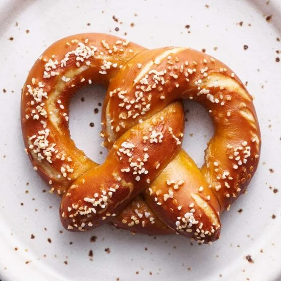

Pretzels

Description
Traditional Bavarian-style pretzels have a deeply browned exterior and chewy texture.
Ingredients
- 1 tablespoon active dry yeast
- 1 tablespoon barley malt syrup or light brown sugar
- 1 1/2 cups (355 grams) warm water (about 110°F), divided
- 5 cups (635 grams) all-purpose flour
- 3/4 teaspoon fine salt
- 2 tablespoons (40 grams) food grade lye
- 1 liter (1000 grams) water, room temperature
- Pretzel salt or coarse salt
Directions
Preheat the oven to 400°F. Line two baking sheets with parchment paper
or silicone baking mats. Spray with nonstick cooking spray or grease with butter.
Steps
- In the bowl of a stand mixer fitted with the dough hook, combine the yeast,
sugar, and 1/4 cup of the water. Whisk to combine. Let stand for 5 minutes or
until frothy.
- Add the remaining 1 1/4 cups water, flour, and salt, and stir to combine.
Mix on low speed until combined.
- Increase speed to medium and knead for five minutes until the dough is elastic
and smooth and doesn’t stick to the sides of the bowl or your hands, adding more
flour if needed. (This will be a very dense dough, so be careful not to step away
from your mixer in case it decides to jump on the counter)
- There is no need to allow this dough to rise. Remove the dough to a clean
work surface (do not flour).
- Divide into 10 equal pieces (each should be about
100 grams).
- Roll each piece against the counter or between your palms into about
a 24-inch long log. The thinner the log, the crispier the pretzels. The thicker,
the softer the pretzels.
- Shape the log into a letter U. Cross the arms placing one over the other then twist
them around each other once. Bring the ends down to the bottom of the U and gently
press to stick. Place on two greased parchment lined baking sheets.
- If you prefer softer spongier pretzels, allow the shaped pretzels to rise for
30 minutes before bathing in the lye.
- In a well vented area, place a plastic or glass container (do not use metal) on top of
a few pieces of parchment paper to protect your counter from splashes. Carefully sprinkle
the lye into the water. Use a silicone spatula to carefully stir the lye to dissolve. The
lye is dissolved when the water looks clear.
- Dip a shaped pretzel into the lye bath for about 30 seconds. Remove to the prepared
greased parchment lined baking sheets. Use a paring knife to score two slices into the
thickest part of each pretzel. Sprinkle with pretzel salt to taste. Repeat until all
pretzels have been lye dipped, scored, and salted.
Option 2: Baking Soda Bath Alternative
- Ingredients
- 2/3 cup baking soda
- 10 cups of water
- In a large pot, bring the baking soda and water to a boil.
- Boil the pretzels in small batches in the soda solution for about 1 minute,
pushing the pretzels into
the water to submerge occasionally.
- Proceed with the recipe as written after the
lye bath step.
- Bake both trays at 400°F for about 16 minutes, alternating the trays halfway through
the baking time for even baking, until deeply golden brown. Bake for less time for
softer pretzels and more time for crispier pretzels.
- Let cool for 5 minutes before peeling away from the parchment paper. Serve warm or
at room temperature the same day you bake the pretzels. To store, freeze the pretzels
in an airtight container for up to 1 month.